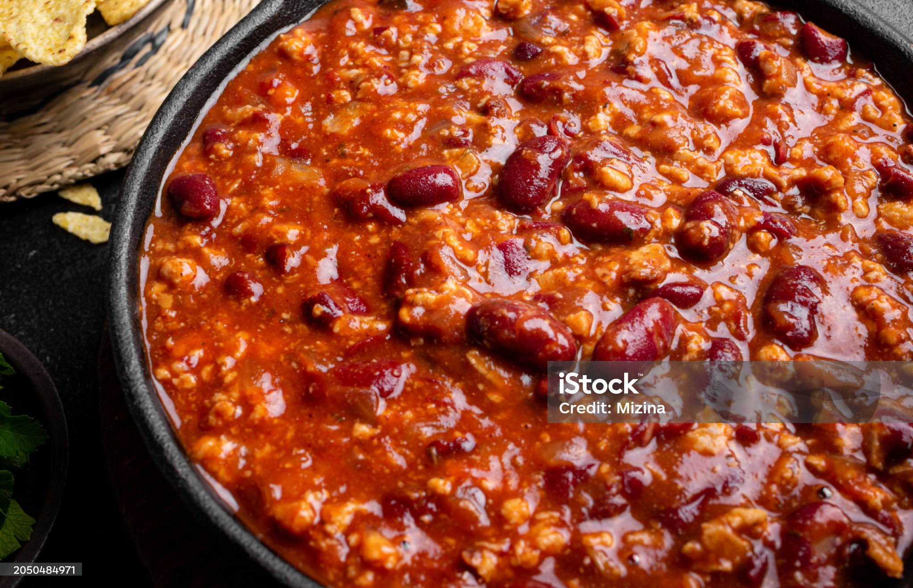

Jeremy's Chili

Home
Ingredients for Jeremy's Favorite Chili
This is my tried and true twist for a classic 'Chili Con Carne' dish. The ingredients you need:
- Minced Beef (10-23% fat content depending on preference) 700-800 grams
- Kidney Beans 400 grams
- Black Beans 400 grams
- Heinz White Beans in tomato sauce 400 grams
- Tomate sauce or diced tomatoes
- 2 Onions
- Variety of chilis 6-8 pieces
- Heavy Cream 3dl
- 70% Cacao Dark Chocolate 100 grams
- Garlic or garlic powder 2 tbsp.
- Pepper mix 2 tbsp.
- Minced Beef seasoning 2tbsp.
- Beef Bouillion cubes 1-2 depending on taste
- Chili powder 1 tbsp.
- Salt in a pinch depending on taste after stock cubes
- Extra Virgin Olive Oil
Steps
- Dice and fry the onions and chilis in olive oil until soft and golden.
- Add the minced beef and fry until brown.
- Add the beans and the heavy cream.
- Add Dark Chocolate to round the acidity of the tomatoes.
- Add the seasonings and bouillion cubes.
- Salt to your tastes.
- Simmer on low heat for 60 - 90 minutes.
- Enjoy with preferred carbs. Rice, pasta, potatoes and potato mash all go well, simple white bread work amazingly too!